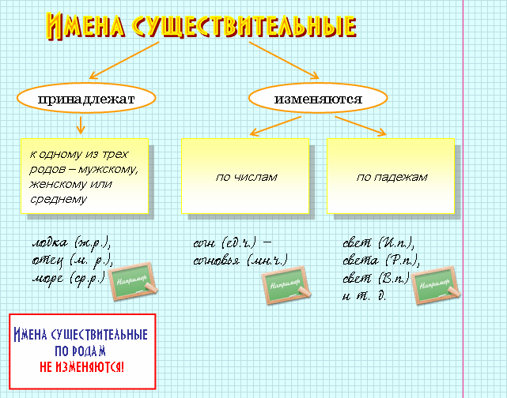

Морфологические признаки существительных: род, число падеж.
|
Существительное − это самостоятельная
часть речи, обозначающая предмет и отвечающая на вопросы кто? что?
Морфологические признаки существительных: род, число падеж. |

 |
Таким образом, род − это постоянный
признак существительного, а число и падеж − непостоянные.
Начальной формой существительного является именительный падеж единственного числа. |
|
Род − это одна из главных грамматических категорий существительного, которая выражается его окончанием. |
|
К мужскому роду относятся существительные с нулевым окончанием в И.п. |  |
дом, город, край, подвиг |
|
К женскому роду относятся существительные с окончанием -а(-я) в И.п., а также некоторые существительные с основой на мягкий согласный или шипящий и нулевым окончанием в И.п. | |
волна, сосна; мудрость |
|
К среднему роду относятся существительные с окончанием -о(ё) и -е в И.п. | |
окно, поле, мужество |
|
Особую группу составляют существительные общего рода, которые могут обозначать людей и мужского, и женского пола: сирота, плакса, неряха, грязнуля, разиня. В предложении они могут быть и существительными мужского рода, и существительными женского рода. | |
Ах ты мой плакса! (о мальчике −
м.р.). Ах ты моя плакса! (о девочке − ж.р.) |
|
К мужскому роду относятся существительные, называющие лиц мужского пола или указывающие на животных и птиц. | |
маэстро, конферансье, шимпанзе, кенгуру, колибри |
|
К женскому роду относятся существительные со значением лица женского пола. | |
леди, фрау, мадам |
|
К среднему роду относятся существительные, обозначающие неодушевленные предметы. | |
пальто, ателье |
|
Род иноязычных географических названий, а также названий газет, журналов определяется по родовому слову. | |
Миссури − ж.р. (река), Онтарио − ср.р. (озеро) |
|
Слово кофе относится к м.р., а кафе − к ср.р. |
 |
Существительные, имеющие формы единственного и множественного числа, обозначают предметы, которые можно считать. Единственное число указывает на единичность предмета, а множественное − на их множественность (река − реки, война − войны). | |
|
Существительные, имеющие формы только единственного числа. Они могут выражать следующие значения: | |
 |
собирательность (детвора, молоко, осинник); | |
|
вещественность (железо, водород, пшеница, аммиак); | |
|
отвлеченность (бегство, свежесть, ширина); | |
|
собственное имя (Киев, Пушкин, Эльбрус). | |
|
Существительные, имеющие формы только мн.ч. Они могут служить названиями: | |
|
парных и нечленимых предметов (ножницы, ворота, мемуары); | |
|
вещества или продукта (отруби, чернила, духи, дрожжи); | |
|
сложных действий (хлопоты, выборы); | |
|
отрезков времени (сутки, каникулы); | |
|
предметов, имеющих собственное имя (Карпаты, Щигры). | |
|
Склонением называется изменение имен существительных по падежам. В русском языке выделяется шесть падежей, значения которых выражаются падежными вопросами. Все падежи, кроме именительного, называются косвенными. |
|
К первому склонению относятся существительные женского рода и общего рода с окончанием -а(-я), а также небольшое количество существительных мужского рода с окончанием -а(-я). | |
весна, земля; дедушка, дядя |
|
Ко второму склонению относятся существительные мужского рода с нулевым окончанием, а также существительные среднего рода с окончанием -о(-е). | |
дом, свет; окно, здание |
|
К третьему склонению относятся существительные женского рода с нулевым окончанием. Они имеют мягкий знак в конце слова. | |
мышь, мать, дочь |
В составном именном сказуемом при нулевой связке именная часть выражена существительным в именительном падеже.
|
Подлежащее выражено существительным в именительном падеже. | |
Наша дружба − солнца яркий свет. |
|
Подлежащее выражено неопределенной формой глагола. | |
Ходить по земле босиком − это настоящее удовольствие. |
|
Если в состав сказуемого входят указательные частицы это, вот, тире ставится перед ними. | |
Чтение − вот лучшее учение. |
|
Если подлежащее выражено личным местоимением. | |
Я ученик восьмого класса (подлежащее − личное местоимение я). |
|
Если в составе сказуемого есть отрицательная частица не. | |
Расстоянье не помеха. |
|
Если в составе сказуемого есть сравнительные частицы как, словно, будто. | |
Жизнь словно долгий путь. |